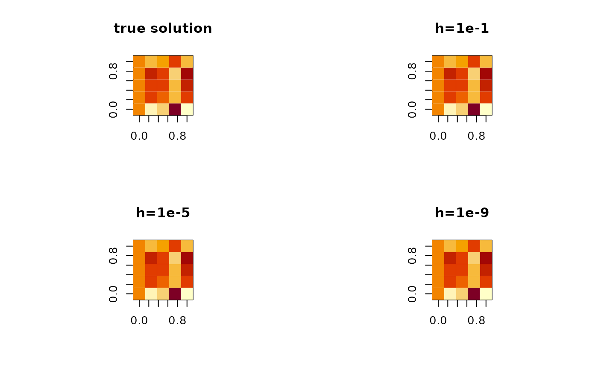

R/matderiv.R
matderiv.RdFor a given function \(f:\mathbf{R}^{n\times p} \rightarrow \mathbf{R}\), we use finite difference scheme that approximates a gradient at a given point \(x\). In Riemannian optimization, this can be used as a proxy for ambient gradient. Use with care since it may accumulate numerical error.
matderiv(fn, x, h = 0.001)a function that takes a matrix of size \((n\times p)\) and returns a scalar value.
an \((n\times p)\) matrix where the gradient is to be computed.
step size for centered difference scheme.
an approximate numerical gradient matrix of size \((n\times p)\).
Kincaid D, Cheney EW (2009). Numerical Analysis: Mathematics of Scientific Computing, number 2 in Pure and Applied Undergraduate Texts, 3. ed edition. American Mathematical Society, Providence, RI.
## function f(X) = <a,Xb> for two vectors 'a' and 'b'
# derivative w.r.t X is ab'
# take an example of (5x5) symmetric positive definite matrix
# problem settings
a <- rnorm(5)
b <- rnorm(5)
ftn <- function(X){
return(sum(as.vector(X%*%b)*a))
} # function to be taken derivative
myX <- matrix(rnorm(25),nrow=5) # point where derivative is evaluated
myX <- myX%*%t(myX)
# main computation
sol.true <- base::outer(a,b)
sol.num1 <- matderiv(ftn, myX, h=1e-1) # step size : 1e-1
sol.num2 <- matderiv(ftn, myX, h=1e-5) # 1e-3
sol.num3 <- matderiv(ftn, myX, h=1e-9) # 1e-5
## visualize/print the results
expar = par(no.readonly=TRUE)
par(mfrow=c(2,2),pty="s")
image(sol.true, main="true solution")
image(sol.num1, main="h=1e-1")
image(sol.num2, main="h=1e-5")
image(sol.num3, main="h=1e-9")

par(expar)
# \donttest{
ntrue = norm(sol.true,"f")
cat('* Relative Errors in Frobenius Norm ')
#> * Relative Errors in Frobenius Norm
cat(paste("* h=1e-1 : ",norm(sol.true-sol.num1,"f")/ntrue,sep=""))
#> * h=1e-1 : 2.47435845237516e-15
cat(paste("* h=1e-5 : ",norm(sol.true-sol.num2,"f")/ntrue,sep=""))
#> * h=1e-5 : 2.35670523982772e-11
cat(paste("* h=1e-9 : ",norm(sol.true-sol.num3,"f")/ntrue,sep=""))
#> * h=1e-9 : 1.97572724360866e-08
# }